AGRITRADE
PRECISELY ORGANIC · INTELLIGENTLY CONNECTED

Eliminate middlemen margins. AgriTrade puts AI-powered soil diagnostics, crop recommendations, multilingual voice access, and transparent peer-to-peer markets directly into the hands of India's farming communities.
Headlines across the nation highlight the widening gap between wholesale costs and the struggles at the farmgate.
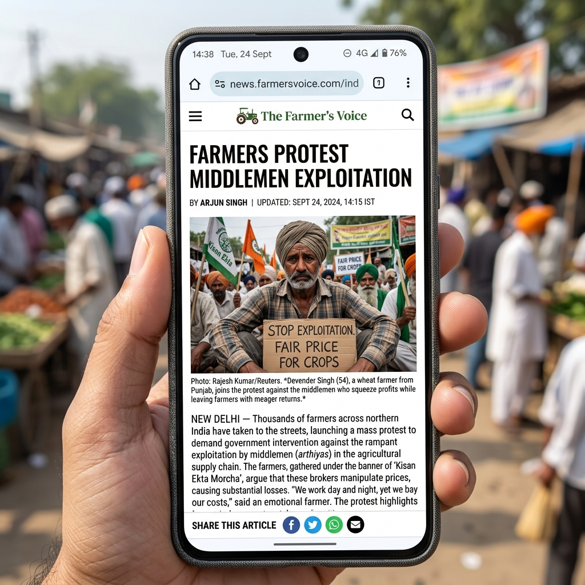
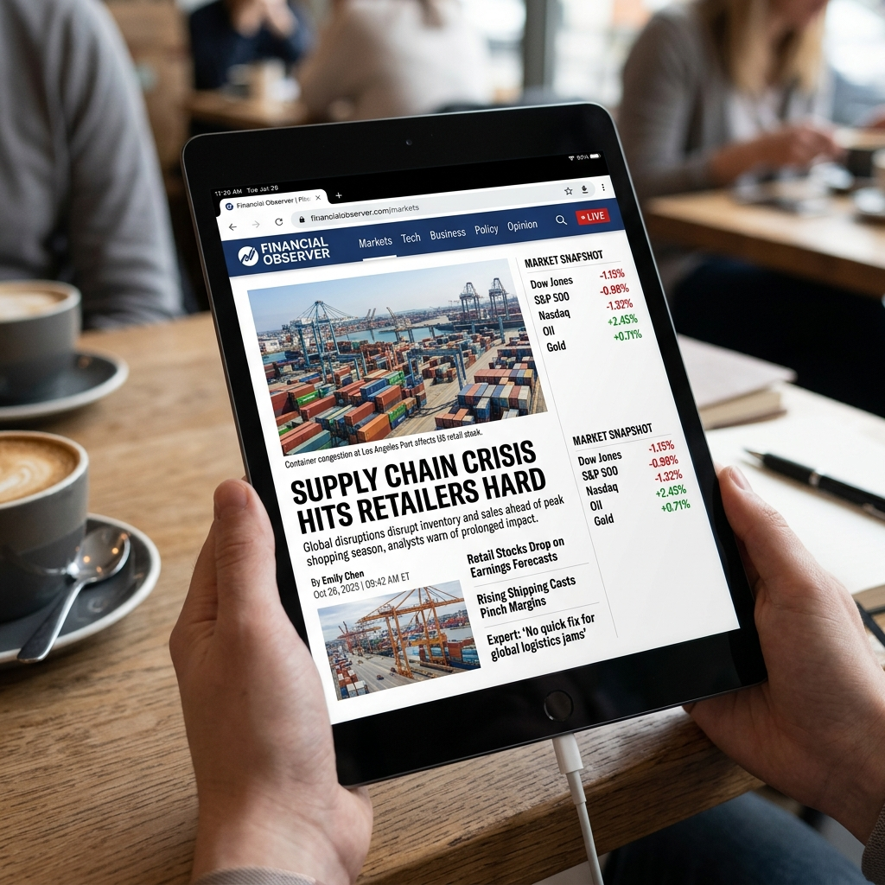
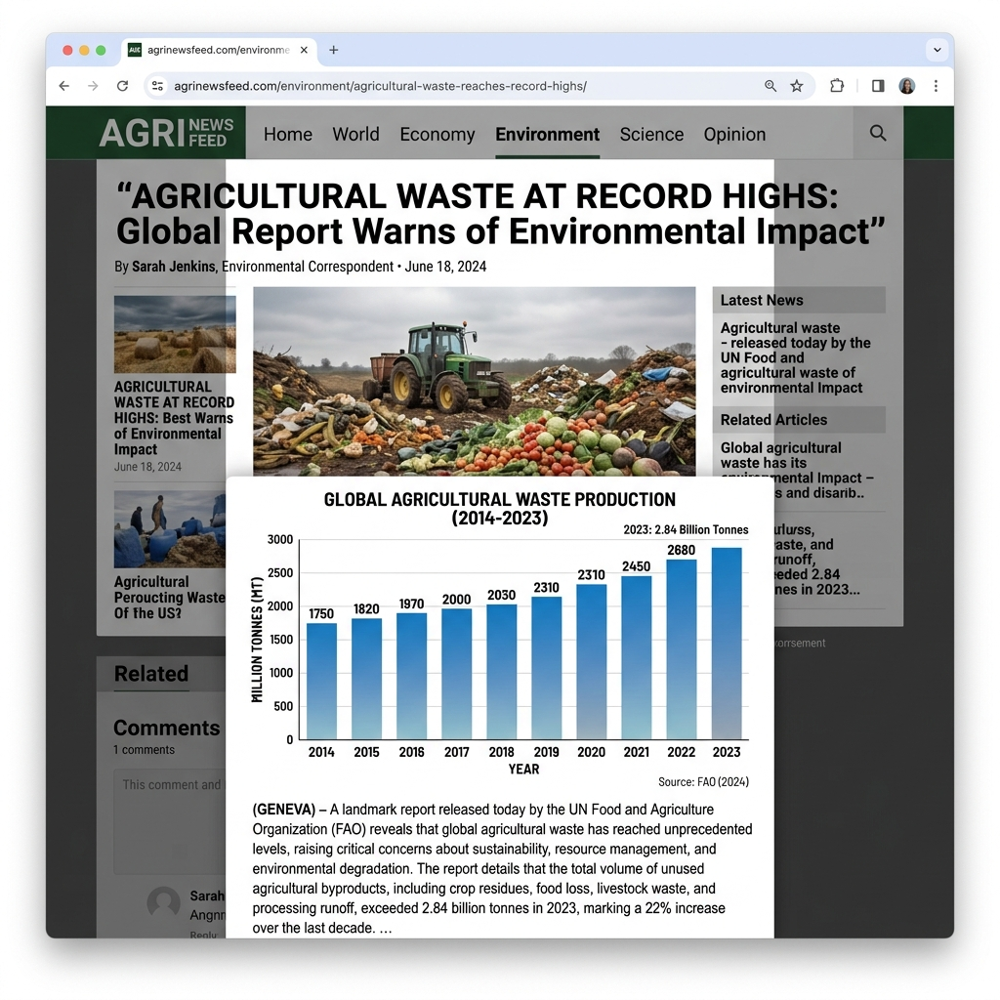
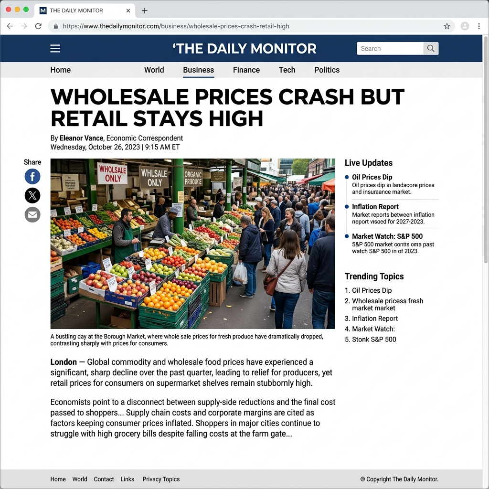
The traditional supply chain exploits hard-working farmers while introducing massive friction and food waste.
Our deterministic venture model targets a highly defensive, capital-efficient niche utilizing massive rural margin disintermediation.
Total Addressable Market: The massive aggregate monetary value of India's annual agricultural food grain and produce trade.
Serviceable Addressable Market: Targeting regional B2B transactions in pilot clusters with stable mobile phone connectivity (Telangana, AP, UP).
Serviceable Obtainable Market: Conservative 0.5% market share capture over a 3-5 year window via aggressive offline Village Anchor networks.
Customer Acquisition Cost (CAC) of just ₹50-100 via offline demos, yields a recurring Customer Lifetime Value (LTV) of ₹4,200 annually per user.
A highly optimized interface tailored for outdoor operations, low-bandwidth villages, and zero-barrier agricultural technology adoption. Click or hover on features to inspect mobile mockups.
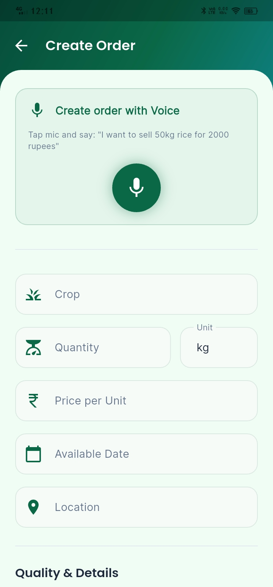
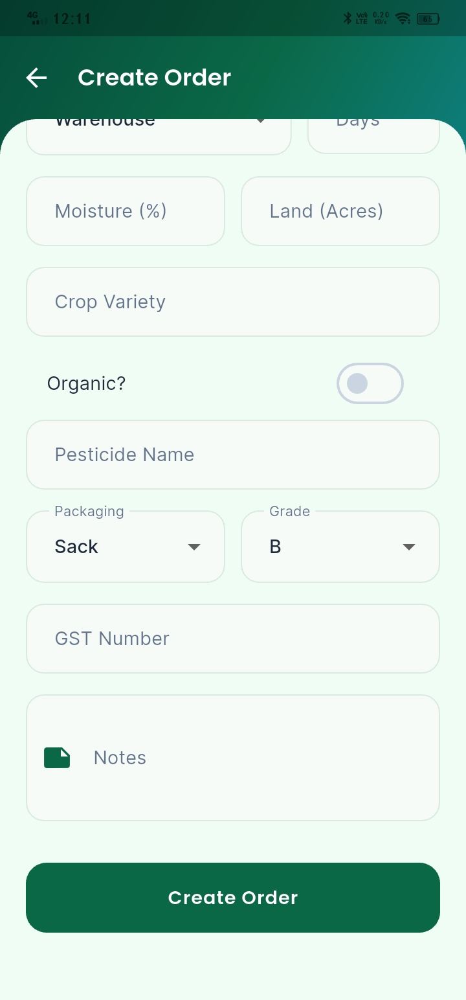
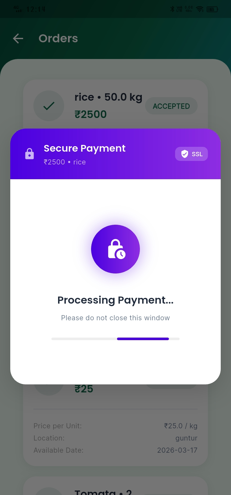
Providing supermarkets, restaurants, and wholesalers with automated organic crop tracking, clear provenance, and direct contracts. Select a card to inspect tablet displays.
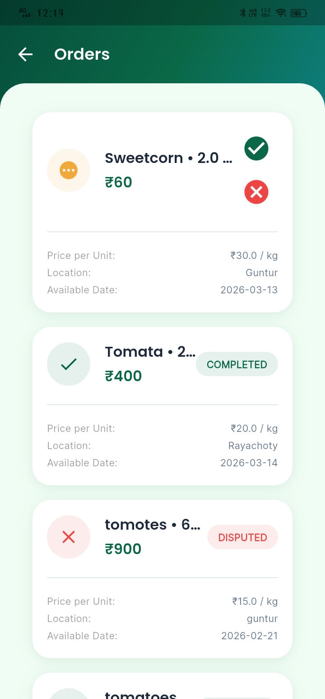
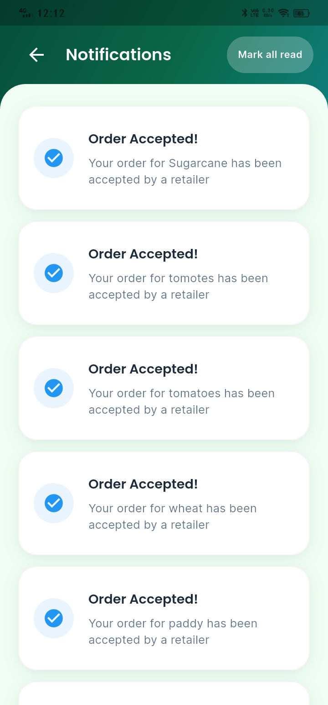
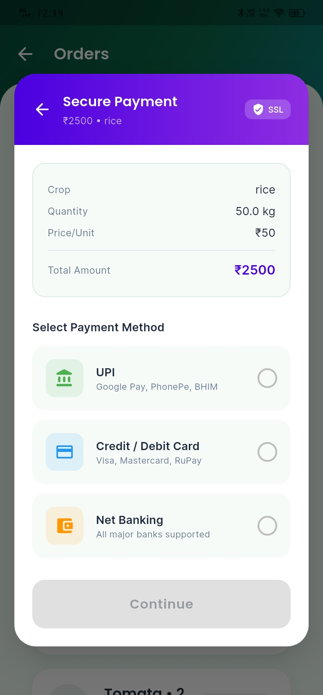
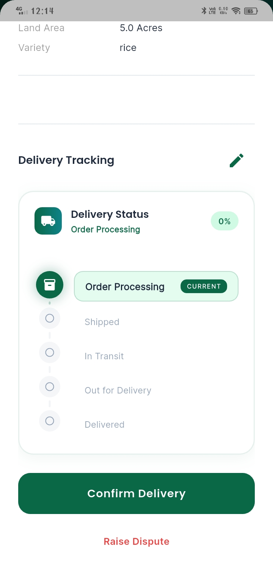
Explore the full logical flow of the AgriTrade Flutter application. Interact with the phases and steps below to inspect real-time mobile emulations.
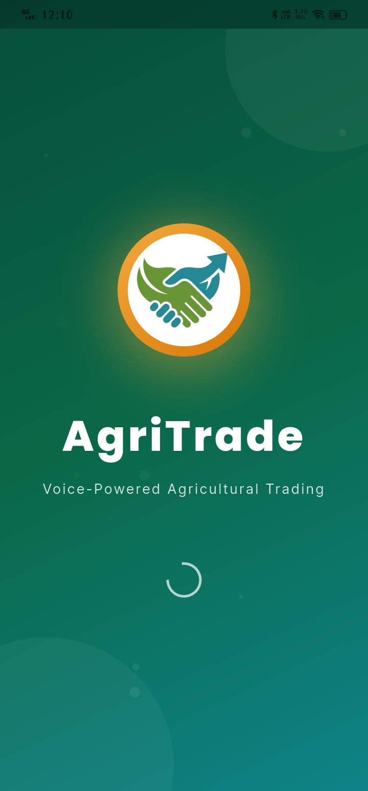
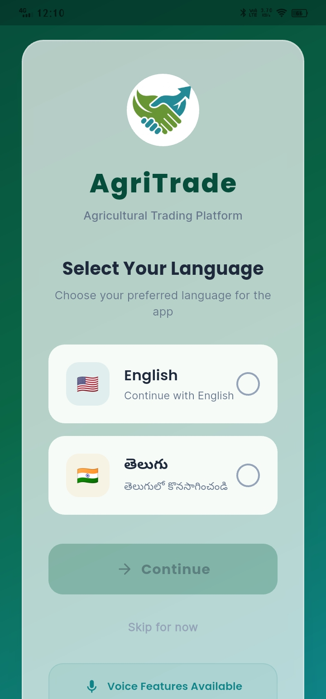
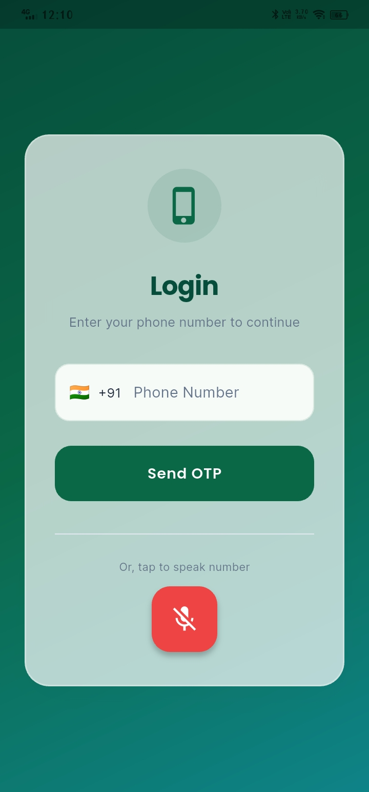
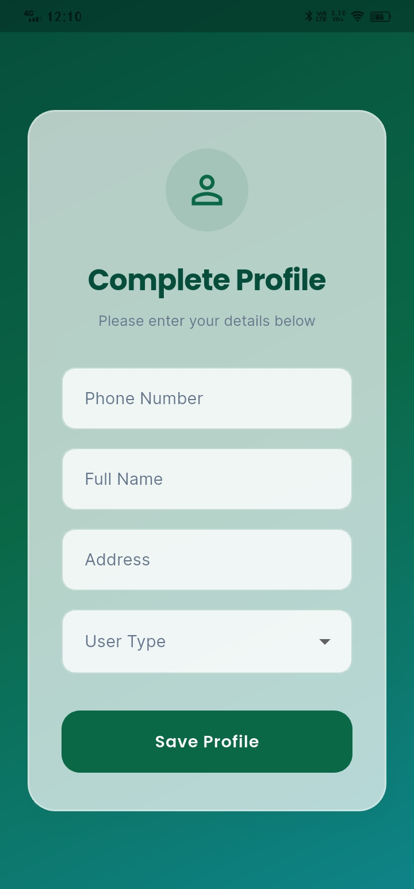
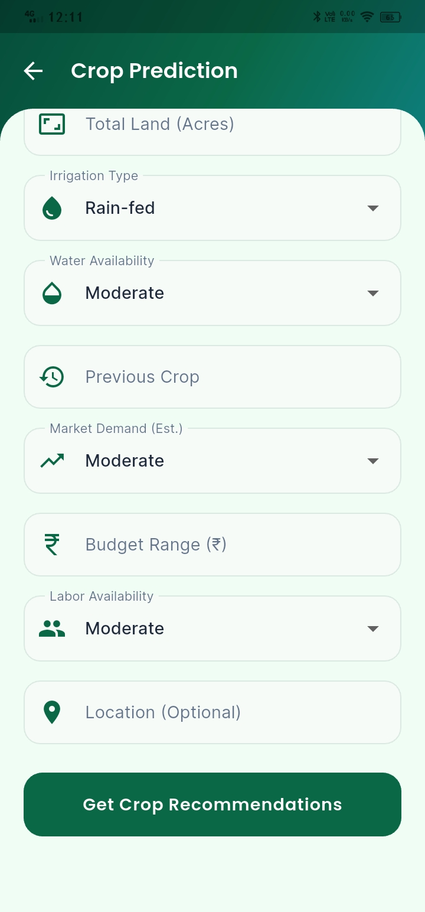
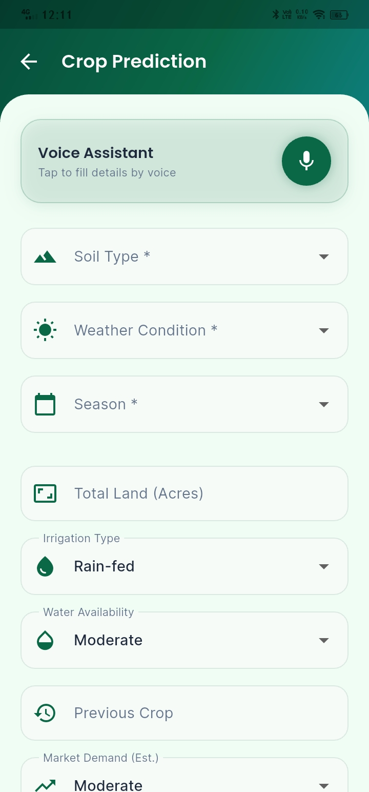
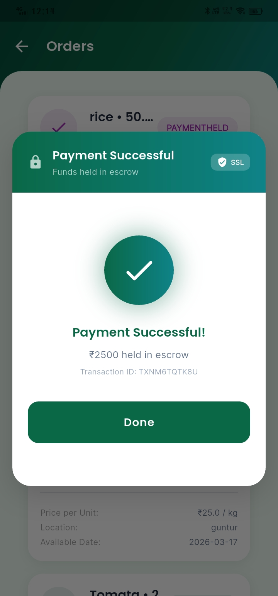
Interact with our actual algorithm directly in the web browser. The logic calculates suitability scores exactly like the mobile app.
The working Flutter build is fully compiled and ready. Scan the source or download directly to test live workflows.